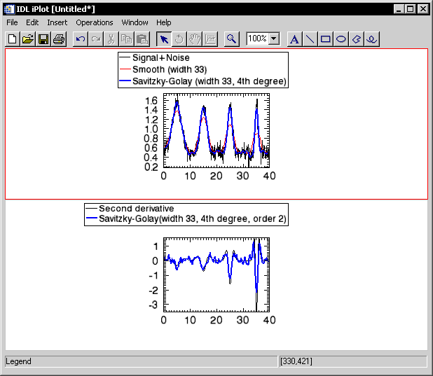

The SAVGOL function returns the coefficients of a Savitzky-Golay smoothing filter, which can then be applied using the CONVOL function. The Savitzky-Golay smoothing filter, also known as least squares or DISPO (digital smoothing polynomial), can be used to smooth a noisy signal.
The filter is defined as a weighted moving average with weighting given as a polynomial of a certain degree. The returned coefficients, when applied to a signal, perform a polynomial least-squares fit within the filter window. This polynomial is designed to preserve higher moments within the data and reduce the bias introduced by the filter. The filter can use any number of points for this weighted average.
This filter works especially well when the typical peaks of the signal are narrow. The heights and widths of the curves are generally preserved.
Tip: You can use this function in conjunction with the CONVOL function for smoothing and optionally for numeric differentiation.
This routine is written in the IDL language. Its source code can be found in the file savgol.pro in the lib subdirectory of the IDL distribution.
SAVGOL is based on the Savitzky-Golay Smoothing Filters described in section 14.8 of Numerical Recipes in C: The Art of Scientific Computing (Second Edition), published by Cambridge University Press, and is used by permission.
Result = SAVGOL( Nleft , Nright , Order , Degree [, / DOUBLE ] )
This function returns an array of floating-point numbers that are the coefficients of the smoothing filter.
An integer specifying the number of data points to the left of each point to include in the filter.
An integer specifying the number of data points to the right of each point to include in the filter.
Note: Larger values of Nleft and Nright produce a smoother result at the expense of flattening sharp peaks.
An integer specifying the order of the derivative desired. For smoothing, use order 0. To find the smoothed first derivative of the signal, use order 1, for the second derivative, use order 2, etc.
Note: Order must be less than or equal to the value specified for Degree .
Note: For ORDER > 0, SAVGOL returns unnormalized coefficients. To use the SAVGOL coefficients with CONVOL, you should multiple the returned coefficients by FACTORIAL(ORDER)/( dx ORDER ), where dx is the sampling interval between data points. See the example below.
An integer specifying the degree of smoothing polynomial. Typical values are 2 to 4. Lower values for Degree will produce smoother results but may introduce bias, higher values for Degree will reduce the filter bias, but may “over fit” the data and give a noisier result.
Note: Degree must be less than the filter width ( Nleft + Nright + 1).
Set this keyword to force the computation to be done in double-precision arithmetic.
Tip: The DOUBLE keyword is recommended for Degree greater than 9.
The following example creates a noisy 400-point vector with 4 Gaussian peaks of decreasing width. It then plots the original vector, the vector smoothed with a 33-point Boxcar smoother (the SMOOTH function), and the vector smoothed with 33-point wide Savitzky-Golay filter of degree 4. The bottom plot shows the second derivative of the signal (without noise) and the second derivative of the noisy data using the Savitzky-Golay filter of degree 4.
Example Code: The code for this example is included in the file savgol_doc.pro in the examples/doc/language subdirectory of the IDL distribution. Run this example procedure by entering savgol_doc at the IDL command prompt or view the file in an IDL Editor window by entering .EDIT savgol_doc.pro .
PRO Savgol_doc
n = 401 ; number of points
np = 4 ; number of peaks
; Form the baseline:
y = REPLICATE(0.5, n)
; Sampling interval:
dt = 0.1
; Index the array:
x = dt*FINDGEN(n)
; Add each Gaussian peak:
FOR i=0, np-1 DO BEGIN
c = dt*(i + 0.5) * FLOAT(n)/np; Center of peak
peak = 3 * (x-c) / (dt*(75. / 1.5 ^ i))
; Add Gaussian. Cutoff of -50 avoids underflow errors for
; tiny exponentials:
y = y + EXP((-peak^2)>(-50))
ENDFOR
; Add noise:
y1 = y + 0.10 * RANDOMN(-121147, n)
; Display first plot
iPlot, x, y1, NAME='Signal+Noise', VIEW_GRID=[1,2], $
DIMENSIONS=[500,800]
; Get an object reference to the iTool and insert legend.
void = IGETCURRENT(TOOL=oTool)
void = oTool->DoAction('Operations/Insert/Legend')
iPlot, x, SMOOTH(y1, 33, /EDGE_TRUNCATE), /OVERPLOT, $
COLOR=[255, 0, 0], $
NAME='Smooth (width 33)'
void = oTool->DoAction('Operations/Insert/LegendItem')
; Savitzky-Golay with 33, 4th degree polynomial:
savgolFilter = SAVGOL(16, 16, 0, 4)
iPlot, x, CONVOL(y1, savgolFilter, /EDGE_TRUNCATE), /OVERPLOT, $
COLOR=[0, 0, 255], THICK=2, $
NAME='Savitzky-Golay (width 33, 4th degree)'
void = oTool->DoAction('Operations/Insert/LegendItem')
iPlot, x, DERIV(x, DERIV(x, y)), YRANGE=[-4, 2], /VIEW_NEXT, $
NAME='Second derivative'
void = oTool->DoAction('Operations/Insert/Legend')
order = 2
; Don't forget to normalize the coefficients.
savgolFilter = SAVGOL(16, 16, order, 4)*(FACTORIAL(order)/ $
(dt^order))
iPlot, x, CONVOL(y1, savgolFilter, /EDGE_TRUNCATE), /OVERPLOT, $
COLOR=[0, 0, 255], THICK=2, $
NAME='Savitzky-Golay(width 33, 4th degree, order 2)'
void = oTool->DoAction('Operations/Insert/LegendItem')
; Reposition the legends
ITRANSLATE, 'legend*', X=-100, /DEVICE
END
|
 |
|
5.4 |
Introduced |